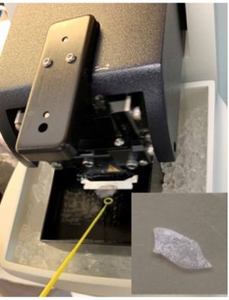

Precision Cut Lung Slices as an Efficient Ex Vivo Tool for Pulmonary Vessel Studies
Establishing and validating a reproducible platform for pulmonary vascular structure and contractility
Overview
Studying pulmonary vascular biology presents a persistent methodological challenge: isolated cell culture strips away the architectural and mechanical context that defines vascular function, while whole-animal preparations are too complex for controlled pharmacological interrogation. Precision-cut lung slices (PCLS) occupy a productive middle ground — a thin, viable ex vivo preparation that preserves vessel architecture, cell–cell contacts, and dynamic responsiveness to vasoactive stimuli.
This JoVE protocol paper establishes and validates PCLS as an efficient tool specifically for pulmonary vessel structure and contractility studies, providing a detailed, reproducible workflow from tissue preparation through live-imaging analysis that can be adopted by the vascular biology community.

Why PCLS? Advantages Over Alternatives
Vessels remain in their native extracellular matrix and retain perivascular cells (pericytes, smooth muscle cells) in proper spatial relationship.
Vessels in PCLS contract and dilate in response to vasoconstrictors (endothelin-1, KCl) and vasodilators (acetylcholine, NO donors), enabling pharmacological profiling.
Thin slices (150–200 µm) are compatible with confocal live imaging, enabling real-time visualization of vascular tone changes and cell behavior.
Multiple slices from a single animal allow within-animal comparison of different drug conditions, reducing biological variability and animal use.
PCLS from transgenic or knockout mice can be directly compared to controls, bridging in vivo genetics with ex vivo functional readouts.
Small pulmonary arteries (50–200 µm diameter) — the vessels most relevant to PAH — are well-preserved and accessible for targeted analysis.
Applications in Our Research
PCLS prepared with this protocol have been used throughout our subsequent research program as a central experimental platform:
- Characterizing pericyte-driven vascular remodeling under hypoxic conditions → Pericytes Drive Pulmonary Vascular Remodeling via HIF2α (EMBO Reports, 2024)
- Assessing ACE2 upregulation in intact pulmonary vessel walls following IFN-α/β stimulation and SARS-CoV-2 vascular infection susceptibility (Angiogenesis, 2022)
Publication
"Precision Cut Lung Slices as an Efficient Tool for Ex vivo Pulmonary Vessel Structure and Contractility Studies."
JoVE (Journal of Visualized Experiments), e62392. 2021.